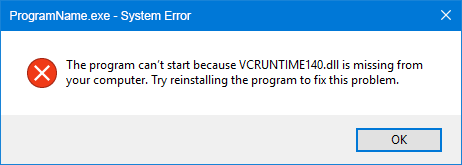
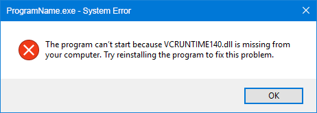

You have installed a program on your windows pc and you have this error:
 

This error is caused by a missing Visual C++ Redistributable for Visual Studio 2022.
To fix this issue, you need to download the Visual C++ Redistributable of 2022 from the official Microsoft website.
Download Visual C++ Redistributable for Visual Studio 2022Once you have downloaded the installer, run it and follow the on-screen instructions to complete the installation.
After the installation is complete, your program should work without any issues.